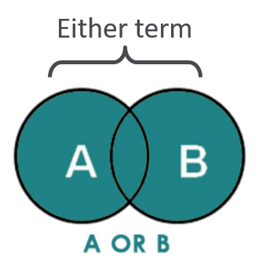
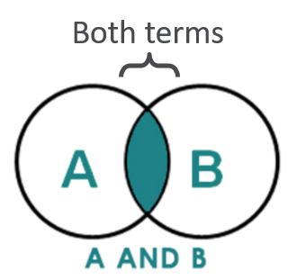

Section 7 Systematic Search
To identify relevant studies to include in your SR, you need to perform a comprehensive literature search based on a well-designed search strategy.
7.1 Selecting Databases
Databases:
The first step is to decide on which databases to search, this will depend on your research area and question. Databases differ in their coverage of journals and how articles are indexed. For preclinical research, typical databases include PubMed, Embase, and Web of Science. A librarian or an expert in bibliographic databases will be able to help you identify other potential databases and construct database-specific search terms. It is common practice to search several databases to guarantee adequate and efficient coverage.
On top of electronic databases, you might want to use other methods to find relevant papers such as: scanning reference lists of relevant studies (both primary studies and reviews), hand searching key journals, contacting experts in the field, and searching additional relevant internet resources. Keep a record of alternative methods used and the data collected in a structured format.
7.1.1 PubMed
PubMed is a bibliographic database comprising of more than 30 million citations for biomedical literature from MEDLINE, life science journals, and online books.
It is a free resource that supports the search and retrieval of biomedical and life sciences literature with the aim of improving health. It is maintained by the National Center for Biotechnology Information (NCBI) at the US National Library of Medicine.
Links & Resources: The PubMed Advanced Search Builder is a useful tool to build your search query.
Information on MeSH Headings.
7.1.2 Embase
Embase is a biomedical research database covering literature from 1947 to present day. It indexes over 32 million records, including MEDLINE titles. It index articles from 2,900 journals unique to Embase.
You may access Embase directly or through Ovid depending on your library subscription.
More information on Embase indexing and EmTree Headings can be found here.
7.1.3 Web of Science
Web of Science is a publisher-independent citation database. The Web of Science Core Collection indexes scholarly journals, books, and proceedings in the sciences, social sciences, and arts and humanities and can be used to navigate the full citation network.
Web of Science can also be used to search other databases including SciELO, KCI-Korean Journal Database and Zoological Record.
7.1.4 Other Sources & Grey Literature
Other bibliographic databases include:
- Cochrane Central Register of Controlled Trials (CENTRAL)
- Google Scholar
- Scopus
- Cumulative Index to Nursing and Allied Health Literature (CINAHL)
- PsycINFO
Access may vary depending on institutional access. Document your search strategy so it is sufficiently reproducible.
7.2 Search Strategy Development
Select your search terms based around each of the PICO (or equivalent) concepts in your research question.
7.2.1 Step 1
Step 1: Find keywords and synonyms for each element
A good exercise is to think of as many synonyms as possible for each of your main concepts or PICO elements.
For example:
If your research question is: What is the effect of antidepressants compared to vehicle or no treatment on infarct volume in animal models of stroke?
Population: Stroke. Synonyms might include: cerebral ischaemia, cerebrovascular accident.
Intervention: Antidepressants. Synonyms might include: fluoxetine, SSRIs
7.2.2 Step 2
Step 2: Index/subject terms (database-specific)
Each core database has their own system for indexing terms, topics, and subjects. Check what subject headings and indexing terms the databases you are interested in searching before you start.
- MeSH terms
- Emtree terms
- (See more information about MeSH and EMTREE above Selecting Databases )
Why use both keywords and indexed terms in your search strategy?
Articles in PubMed are manually indexed but there is usually a slight delay. To capture all articles that use non-standard language, including recently published ones, you might miss some by using only a keyword search.
7.2.3 Step 3
Step 3: Combining Search Terms
Boolean Operators
The OR operator is used to connect two or more similar concepts (synonyms). It is used to broaden the results by telling the database that at least one of the search terms must be present in the results.
The AND operator is used to narrow the results. It is used to tell the database that all search terms must be present in each result.
 
7.2.4 Precision & Sensitivity
Precision is the ability of search strategy to exclude irrelevant articles.
Sensitivity is the ability of a search strategy to identify all relevant articles.
The aim is to maximise sensitivity while attempting to maximise precision.
7.2.5 Tips & Tricks
- Consider differences in spelling (e.g. US vs UK English)
- Consider using other PubMed fields e.g. MeSH SubHeadings [SH], or Pharmacological Action [PA]. Find more information here: PubMed Search Tags
- When using the NOT Boolean Operator, consider what relevant literature you might be excluding. - Consider truncation symbols or “wildcards” for your search (e.g. ischem* for ischemia and ischemic, etc). Check all bibliographic databases allow this before adding to your search.
7.3 Run Searches & Combine Results
Once you have composed the main components of your search strategy. You can now run your searches across your databases of choice.
- Run search strings in specified databases.
The Polyglot Search Translator is a tool that will assist you in translating the syntax of your search string across various databases. For more information of the Polyglot Search Translator see here.
To more easily find full text pdfs, remember to add you library subscription information into the settings or preferences of the reference manager, e.g. EzProxy information or OpenURL information.
Does the import order matter? YES!
The order that you import your references into Endnote or another reference manager matters. Different bibliographic databases have different quality or completeness of the references you are interested in, and reference managers use this information to deduplicate the results (the next step).
The recommended order is:
- Medline
- Embase
- Medline in process (if included)
- Other databases from OvidSP (PsycInfo, EconLit etc)
- PubMed
- Cinahl Plus
- Other databases from Ebsco
- Web of Science databases
- Scopus
- ProQuest databases
- Cochrane databases
- CRD databases
- Any other databases
- Clinical Trials websites
7.4 Deduplication
You have searched several different databases and other sources. There are likely duplicates or overlap. Time spent deduplicating your reference library will ensure you have accurate numbers (total records/included/excluded) to report and don’t waste your time screening duplicates.
Tools to help remove duplicate references include:
- Endnote can be used to find and remove duplicate records. See this resource.
- Stand-alone tools such as the SR-Accelerator Tool and the ASySD tool for preclinical reviews.
7.5 Update your Searching & Tools
SyRF Systematic Review Facility has a built-in function that can automatically retrieve new records that meet your search string from PubMed. For more information, see the SyRF Help Guide here.
The Polyglot Search Translator is a tool that will assist you in translating the syntax of your search string across various databases. For more information of the Polyglot Search Translator see here.
7.6 Find & Retrieve Full Texts
Once you have your library of unique references you can find and retrieve the full texts.
- Use your reference manager. Guides for retrieving from Endnote and Zotero can be found at the respective links.
N.B. Remember to add your Institutional Log-in information to the settings or preferences of the reference manager, e.g. EzProxy information or OpenURL information, so you can more easily find the full texts that your institutional library has access to.
Search Online: Google search, GoogleScholar, ResearchGate, etc.
Contact corresponding authors directly via email or Twitter.
Last resort: ask your librarian to assist with inter-library loans. (NB: these can be very costly!)
!! NB: Be careful using custom scripts or other programs to bulk download as this can result in your institutional IP address being blocked !!
If your search strategy has retrieved a lot of potentially relevant results, you may want to consider waiting to find the full texts until after you have carried out titles and abstract screening (see below). This will greatly reduce the number of full text records you need to find, and you will not waste time trying to find articles that are not relevant to your research question.
Website by A Bannach-Brown on behalf of CAMARADES & CAMARADES Berlin
CAMARADES.Berlin@charite.de

This work is licensed under a Creative Commons Attribution 4.0 International License.